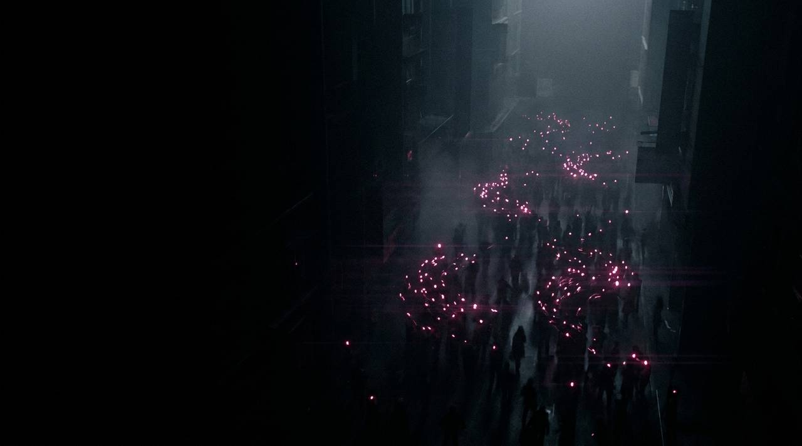
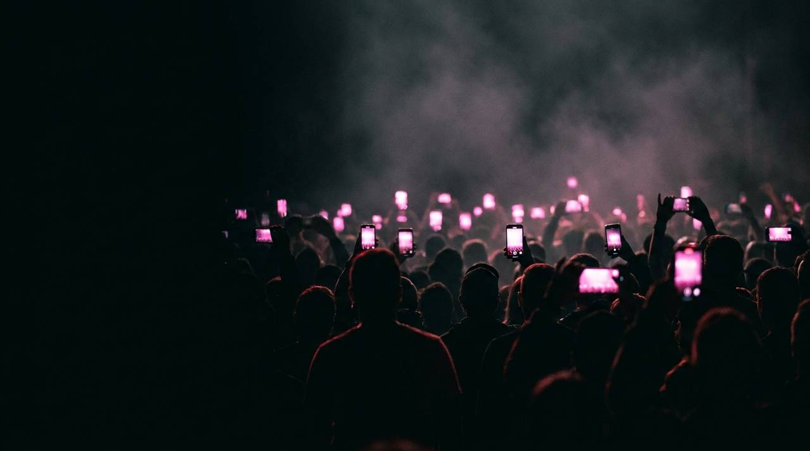
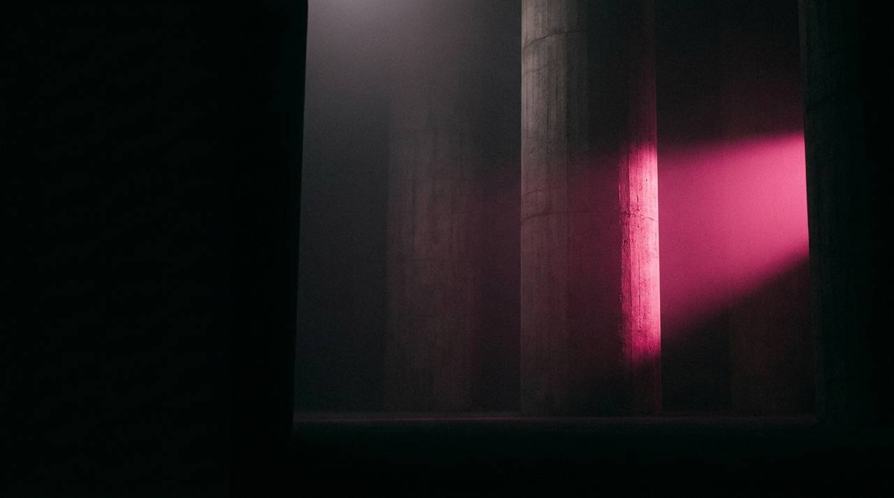
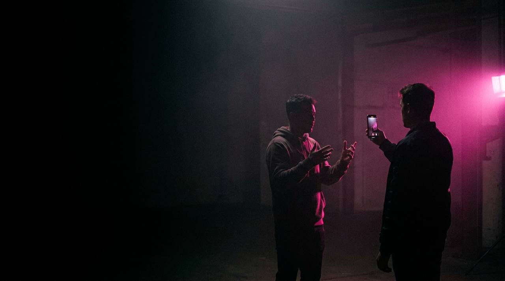
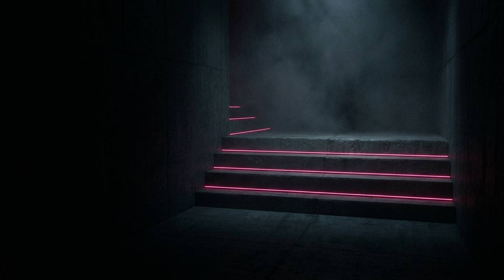
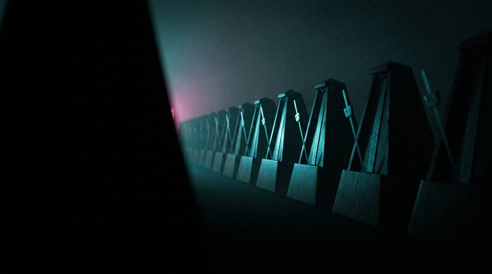
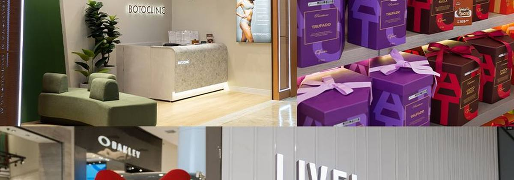
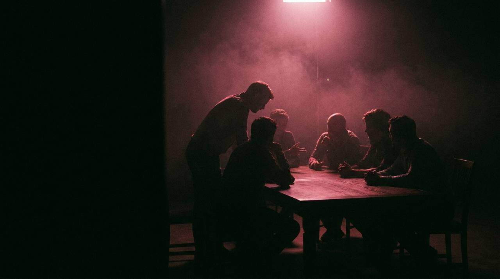

Transformamos presença digital corporativa em motor de autoridade, escuta ativa e tração de receita.
A pergunta “quantos posts por mês?” transformou gestão de redes em commodity. Se o que se compra é quantidade, qualquer fornecedor entrega, e a única conversa que sobra é preço.
Nosso campo de batalha é a profundidade de conteúdoprofundidade de conteúdo.
Foco em volume, não em resultado.
Post invisível: publicado sem distribuição.
Canais proprietários como ativo de negócio.
Integração total com performance.

Qual é a conversa que já está acontecendo? É dela que a pauta nasce.
Tangibilização visual, tom de voz e governança de marca em todos os canais.
Formato autoral nascido da escuta do mercado e das dores reais do consumidor.
Seguidor passivo vira membro engajado: propósito, narrativa própria e co-criação.

Não decidimos o que falar. Ouvimos o que o consumidor quer ouvir. Nossa pauta nasce das conversas reais do mercado.
As redes viram o principal motor de inteligênciamotor de inteligência sobre o público final.
Tendência e assunto do momento mapeados enquanto acontecem, não depois que passaram.
O que o público pergunta, reclama e duvida vira banco de dores, e o banco de dores vira pauta.
Resposta na linguagem de quem perguntou, no formato da plataforma em que perguntou.
Provamos com dado real, não com intuição, que a marca oferece o que o consumidor já procura.

Antes de falar, entender o terreno. A Head de Estratégia conduz a imersão, e é a etapa que não se repete: ela sustenta os doze meses.
Tire a imersão e três camadas caem junto. O que sobra é postO que sobra é post.
Diagnóstico do cenário interno, histórico de comunicação e arquitetura de portfólio.
Big Idea, mote institucional e taglines. Transição de imagem quando necessária.
Persona B2C, B2B e B2G, mapa de empatia, mundo perfeito, jornada e funil.
Benchmark competitivo, matriz de fontes de valor e SWOT aprofundada.

A dupla criativa ideal não é mais redator e diretor de arte. É diretor de criação e creator. A internet não tolera anúncio de TV adaptado para o feed.
A ideia já nasce com a linguagem nativalinguagem nativa da plataforma.
Seleção por fit cultural e técnico, não por número de seguidor.
A marca entra com o rigor técnico, o creator com a espontaneidade que retém.
Mídia paga veiculada direto pelo perfil do creator parceiro.
A maior parte das agências terceiriza vídeo. A Mkt Virtual tem operação audiovisual própria dentro do grupo, a Mokotó. Isso muda prazo, custo e controle.
Ter a produção dentro de casa é o que torna o volume viávelvolume viável.
Roteiro e direcionamento a partir da pauta já aprovada.
Equipe em campo, imagem e áudio com equipamento próprio.
Decupagem, edição, trilha, legenda e tratamento de cor.
Nos formatos das redes contratadas, com rodadas de ajuste definidas.
Nenhum conteúdo estratégico é publicado sem estratégia de distribuição atrelada. A distribuição é o que separa conteúdo que existe de conteúdo que trabalha.
O que o consumidor pergunta vira pauta. O que a pauta gera de conversa vira dado. O dado corrige a pauta seguinte.
É isso que separa uma agência que produz de uma agência que aprendeuma agência que aprende.
Social listening e comunidade como motor de inteligência sobre o público final.
Time interno e creators produzindo conteúdo nativo que resolve a dor na prática.
Distribuição pelos canais proprietários e mídia paga, aos alvos certos.
Conteúdo exclusivo gerando lead qualificado e conversa comercial.

Quatro etapas, e cada uma existe porque a anterior existiu. Todo pacote, do P ao G, nasce da mesma espinha: o que muda é a profundidade de cada etapa.
O que o cliente compra não é a peça. É a cadeia que faz a peça certa existira cadeia que faz a peça certa existir.
Diagnóstico de negócio e marca, Big Idea, benchmark, SWOT, persona e jornada.
Pilares editoriais, tom de voz, diretrizes de linguagem e framework de KPIs.
Direção editorial, esteira de produção, publicação e relacionamento.
Report de resultados que vira insumo da pauta seguinte.

O maior erro de uma agência é produzir o conteúdo da semana na própria semana. Isso compromete a qualidade e estressa o time. Em janeiro, o time já produz e aprova o conteúdo de fevereiro.
Eliminamos o estresse de aprovação em cima da hora com rigor de gestãorigor de gestão, não com esforço heroico.
Em janeiro, o time já produz e aprova o conteúdo de fevereiro.
De uma a duas vagas por semana ficam livres para trend e factual.
Prazo contratual para a aprovação do cliente, que blinda o cronograma.
Cada peça é um card que caminha por colunas, do a fazer ao agendado.
Planejamento e gestão de redes, produção semanal de vídeo e foto, mídia paga e SAC. O ciclo completo rodando sem interrupção há quatro anos.
Ver o case completo
Conteúdo de oportunidade conectando as lojas ao hype do filme “O Diabo Veste Prada”, com linguagem nativa da plataforma.
Ver o case completoLinguagem de nicho gamer, gestão de creators e série de vídeos de lançamento produzida pela Mokotó. Social e audiovisual no mesmo cliente, pelo mesmo grupo.
Ver o case completoNegócio, marca, público e mercado
Pilares, tom de voz e KPIs
Mote, pauta e briefing do mês
Estático, carrossel e motion
Copy, agendamento e comunidade
Leitura que corrige a pauta seguinte
Curadoria, co-criação e whitelisting
Equipe da Mokotó em campo
Bloco de minutos por dia útil
Dark post, ICP e report próprio
Diagnóstico de negócio, marca e posicionamento, Big Idea, benchmark, SWOT, persona e jornada. É a fundação: sem ela, tudo o que vem depois roda no escuro. Se o cliente já tem parte disso bem desenhada, a gente aproveita e adapta só o que falta.

O time não é genérico: cada função entra porque há entregável no pacote que a exige.
Vamos transformar suas redes no seu principal ativo de crescimento? O próximo passo é uma sessão de imersão e diagnóstico, para mapearmos as conversas e as oportunidades do seu ecossistema.